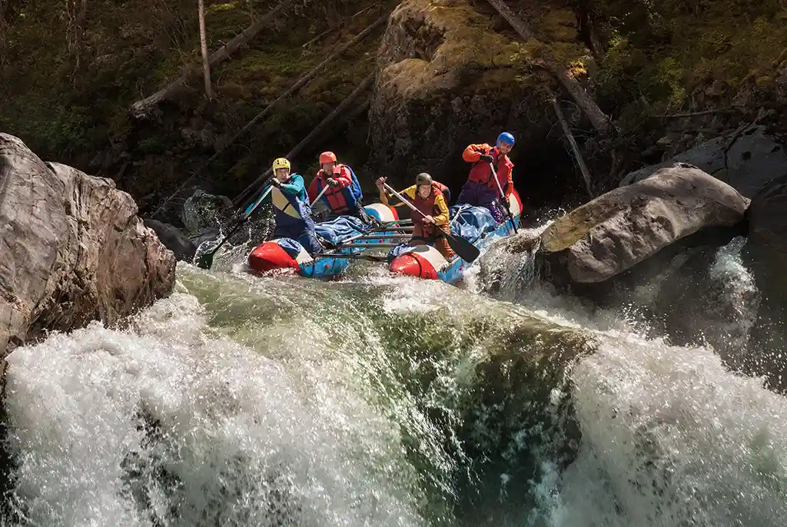

Nossa missão é proporcionar momentos inesquecíveis para nossos clientes, levando-os por correntezas cheias de aventuras incríveis! Você não vai querer voltar para a margem!

WWR Rafting
History
Fundada em 2002, a WWR Rafting foi criada por um grupo de amigos que sobreviveu à pororoca amazônica. A sede por adrenalina fez com que esses amigos compartilhassem de suas aventuras com a expertize de quem sempre volta pra casa em segurança, levando milhares depessoas a conhecer as maravilhas e adrenalina da natureza.
Adventure Awaits You!


